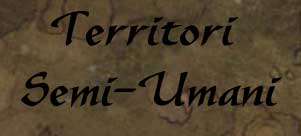
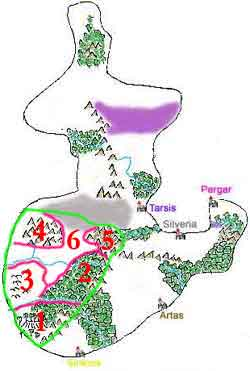

Si suole definire Territori Semi-Umani una vasta area di Arelia delimitata a Est dall'imponente catena montuosa dei Monti Roar e a nord dal grande avvallamento, paludoso e nebbioso, delle Terre Selvagge.
Per molti secoli in questa zona si sono sviluppate le civiltà dei semi-umani, lontano dal contatto con gli esseri umani che, invece, crescevano e si moltiplicavano a Est dei Roar e nel Nordor.
In realtà è possibile distinguere all'interno di questa grande area geografica sei distinte zone, ognuna delle quali è separabile dalle altre e del tutto caratteristica. Le zone sono:
Questa è la culla della civiltà elfica, è il territorio del Reame Elfico Erlin, il magico reame degli Elfi Grigi dove è proibito ai non elfi senza permesso di entrare. Si estende nella Grande Foresta Elfica a nord fino al Fiume Impetuoso e al Fiume Tidar.
E' la parte della Grande Foresta Elfica dove vivono le comunità, ormai fiorenti, di Elfi Alti che si sono dichiarati indipendenti dalla Corona Erlin.
3) La Grande Contea Halfling
E' una zona collinare molto estesa dove da secoli si sono insediante comunità di Halfling che hanno formato vari villaggi di piccole dimensioni e hanno coltivato e bonificato gran parte delle colline.
4) Il Grande Massiccio dell'Ovest
E' un enorme ed imponente massiccio montuoso caratterizzato da monti di granito geologicamente nuovi e quindi molto alti e dalle creste acuminate. In questa zona impervia si sono insediati dopo il Grande Esodo le popolazioni naniche fondando grandi roccaforti e scavando profonde miniere.
5) I Monti Cirs
Con questo nome sono chiamati un piccolo gruppo di monti che al culmine della catena dei Roar si stacca leggermente dall'imponente catena. Su questi monti si sono insediati con villaggi e cittadelle sotterranee la gran parte degli Gnomi di Arelia, in queste aree si trova la Scuola delle Illusioni dove Maestri di Magia gnomici studiano il mondo della percezione magica.
6) Le Pianure di Mezzo
Nelle pianure di mezzo dopo secoli di tranquillità sono finiti per giungere gli Umani... Nelle pianure hanno fondato alcune comunità e hanno portato con se il lato oscuro... NuovaNembus ormai territorio dell'Impero Scuro, la Rocca di Irengard, le cittadelle di Tars e Narsis, sono state fondate e costituiscono il punto di contatto più stretto fra le civiltà dei semi-umani e quella invasiva degli esseri umani.